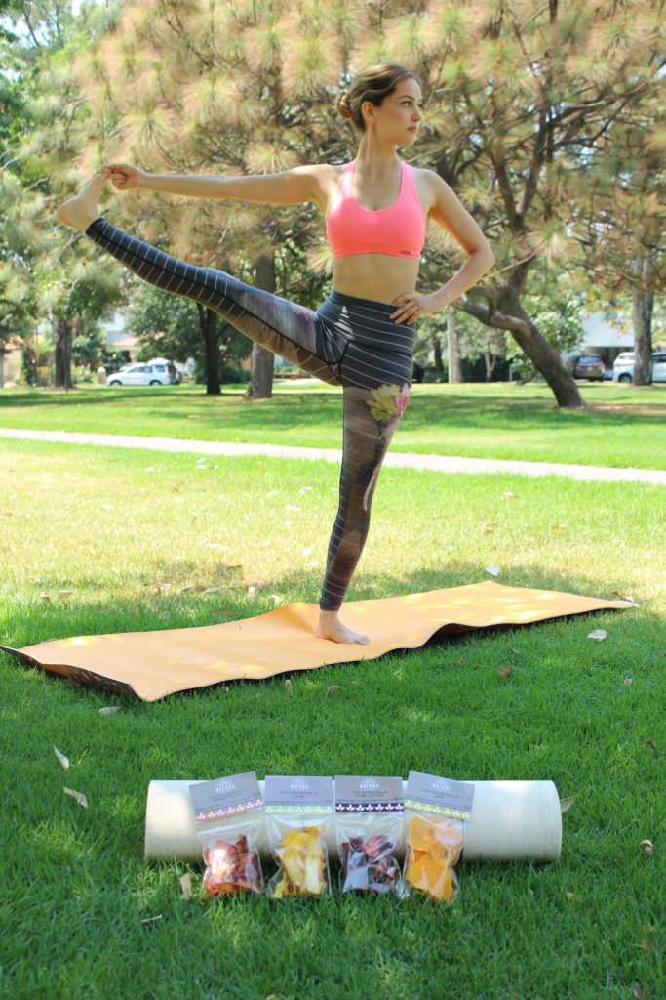

Paloma Tamayo
Es Licenciada en Administración de Empresas y además una reconocida yogui de la ciudad y del medio Ashtanga Internacional: practicando esta disciplina diariamente desde hace tres años. Uno de sus mayores logros ocurrió a principios del 2017 ya que tuvo la oportunidad de vivir por un mes en Mysore, India asistiendo a prácticas en el K. Pattabhi Jois Ashtanga Yoga Institute: el instituto más importante de Ashtanga a nivel mundial con Sharathji, nieto del gran fundador. Actualmente, Paloma ayuda a que las personas se acerquen y mejoren en su práctica de Ashtanga a través de las clases que imparte en distintos estudios de la ciudad, así como sesiones particulares.
Te compartimos sus redes sociales para que veas todo lo que ella hace:
Patricia Martínez
Es Licenciada en Mercadotecnia y además Licenciada en Nutrición Gastronómica y HealthCoach. Con tal sólo 26 años de edad ha logrado concientizar poco a poco en las personas la importancia de seguir un estilo de vida saludable, así como lo delicioso que puede ser la comida nutritiva. Ella cree que todos deberíamos alcanzar una vida integral, donde lo personal, profesional, nuestra alimentación y el ejercicio convivan en armonía.
Te compartimos sus redes sociales para que veas todo lo que ella hace: